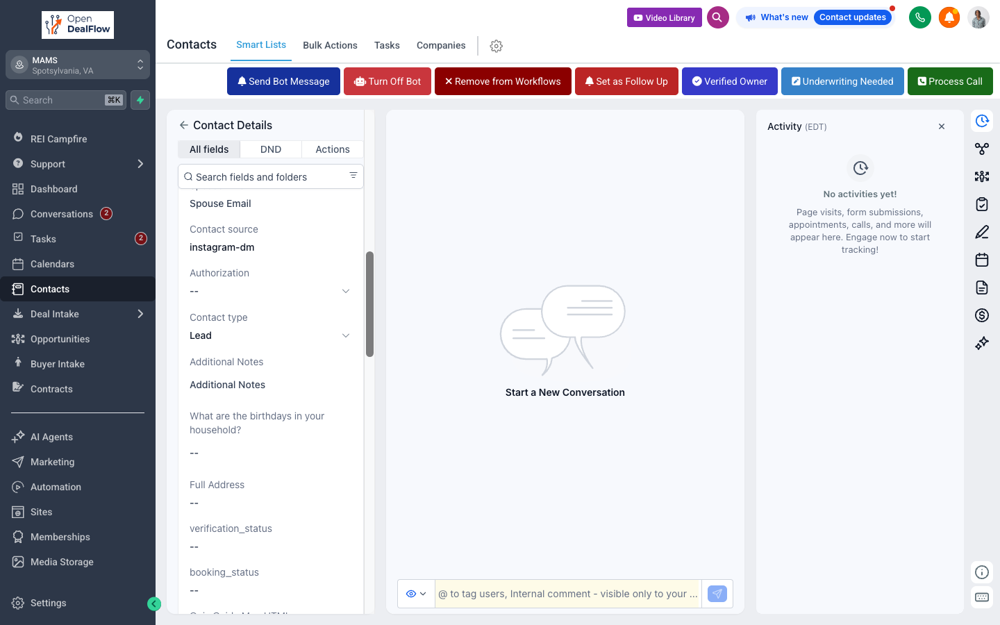

Tap a contact.
This opens.
Source =
instagram-dm.
That's their MAMS IG reply.
Notes panel.
Full IG transcript lives here.
Open it before you DM back.
Read the transcript -> reply on IG -> capture phone or email.